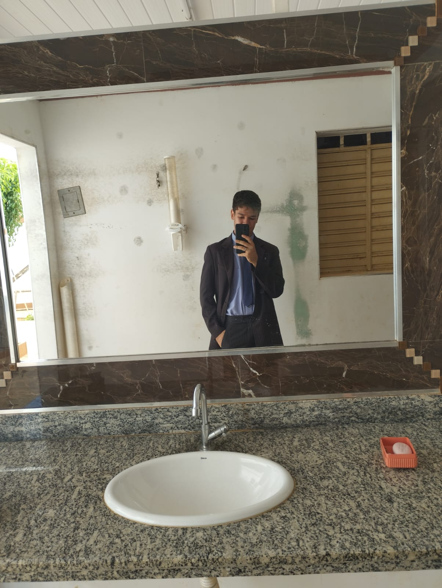

<!DOCTYPE html>
<html lang="pt-br"></html>
<head>
    <link rel="stylesheet" type="text/css" href="style.css" media="screen"/>    
    <meta charset="UTF-8">
    <meta name="viewport" content="width=device-width, initial-scale=1.0">
    <!-- GOOGLE FONTS -->
    <link rel="preconnect" href="https://fonts.googleapis.com">
    <link rel="preconnect" href="https://fonts.gstatic.com" crossorigin>
    <link href="https://fonts.googleapis.com/css2?family=Poppins:ital,wght@0,100;0,200;0,300;0,400;0,500;0,600;0,700;0,800;0,900;1,100;1,200;1,300;1,400;1,500;1,600;1,700;1,800;1,900&display=swap" rel="stylesheet">
    <!-- FIM GOOGLE FONTES -->
    <!-- BOOTSTRAP ICONS -->
    <link rel="stylesheet" href="https://cdn.jsdelivr.net/npm/bootstrap-icons@1.10.5/font/bootstrap-icons.css">
    <!-- FIM BOOTSTRAP ICONS -->
    <link rel="stylesheet" href="style.css">

    <script src="menu.js" defer></script>

    <title>Sobre</title>


</head>
<body>
    <header>
        <section class="sobre">
            <div class="interface">
                <div class="flex">
                    <div class="img-sobre">
                        
                    </div><!--img-sobre-->

                    <div class="txt-sobre">
                        <h2>MUITO PRAZER, <span>SOU JONATAS BARBOSA.</span></h2>
                        <p>Sou Desenvolvedor de Software,e de Aplicações web. Sou um profissional da area a mais de 2 anos, onde conheço os principais fundamentos para uma Software ou para pagina web
                            bem orgazinados e otimizados, para agrager os seus clientes e principais usuarios.
                        </p>
                        <p>Atualmente Trabalho com as linguangens de Programação mais conhecidas do mercado, além de suas principais ferramentas. e posso atuar como desenvolvedor fullstack, Front-end assim como tambem Back-end.
                        </p>
                        <p>
                            Logo abaixo estão os links para meu Instagram profissional e meu Linkedin, onde posto alguns dos meus projetos principais.
                        </p>
                        <div class="btn-social">
                            <a href="https://www.instagram.com/jonhmick23/"><button><i class="bi bi-instagram"></i></button></a>
                            <a href="https://www.linkedin.com/in/jonatas-barbosa-8ab8b3299/"><button><i class="bi bi-linkedin"></i></button></a>
                        </div><!--btn-social-->
                    </div><!--txt-sobre-->
                </div><!--flex-->
            </div><!--interface-->
        </section><!--sobre-->

    </header>
</body>